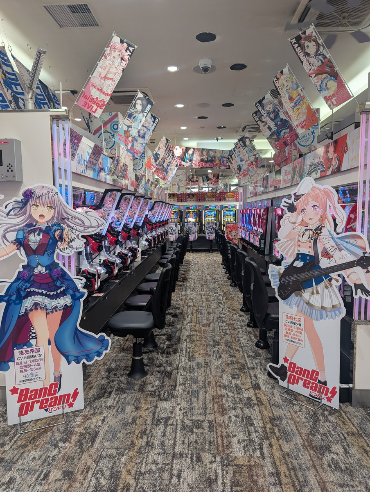
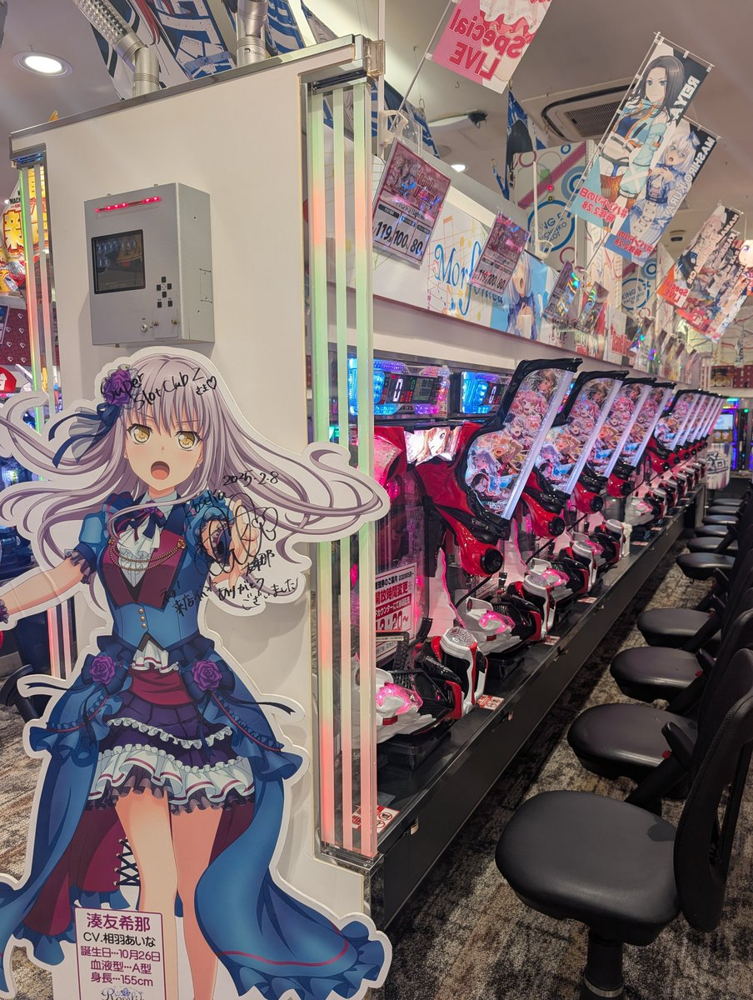

𝓶𝓸𝓻𝓽𝓲𝓼
@0Yowlry
RT @anianimatsuri: 横浜駅に
✨『バンドリの聖地』登場✨⁉️
現在販売されている『バンドリ』の機種でBOXを構成しました✨
盛り上げる為にクラブZから相葉あいなさんと西尾夕香さんのサイン入りパネルも借りてきました🎵
8月15日には『西尾夕香』さんの来店も…


キングEX@横浜駅西口ビブレ前
@anianimatsuri
横浜駅に
✨『バンドリの聖地』登場✨⁉️
現在販売されている『バンドリ』の機種でBOXを構成しました✨
盛り上げる為にクラブZから相葉あいなさんと西尾夕香さんのサイン入りパネルも借りてきました🎵
8月15日には『西尾夕香』さんの来店も予定してます！
@240y_k
#バンドリ #バンドリの聖地 https://t.co/92WRnJonXD